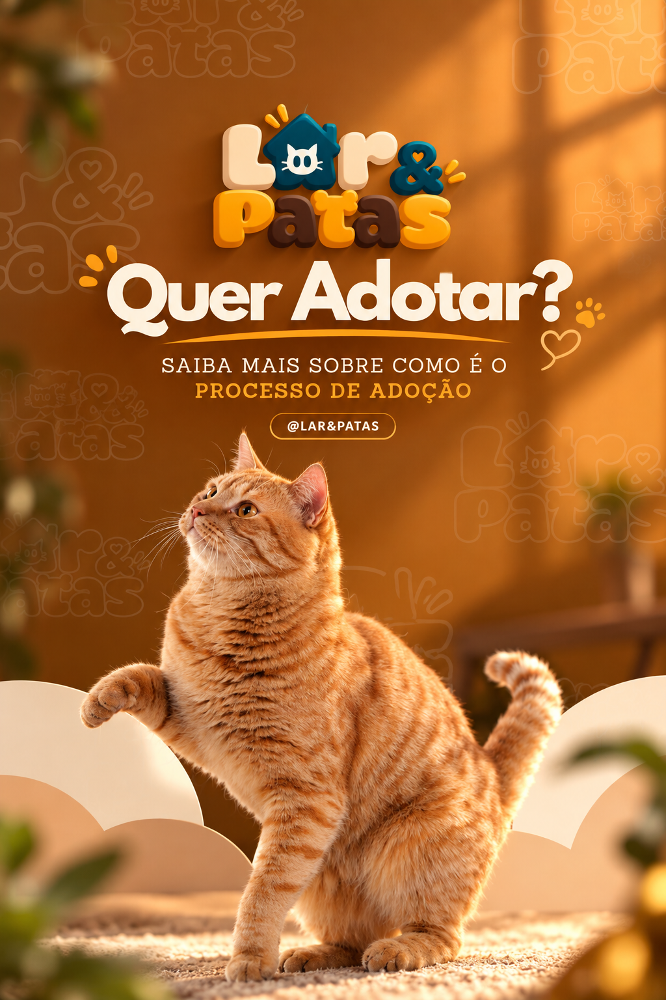
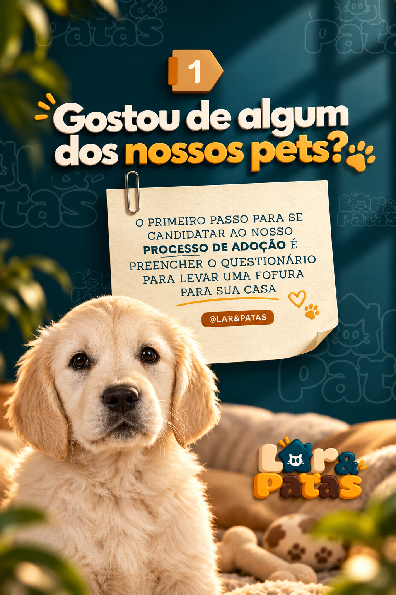
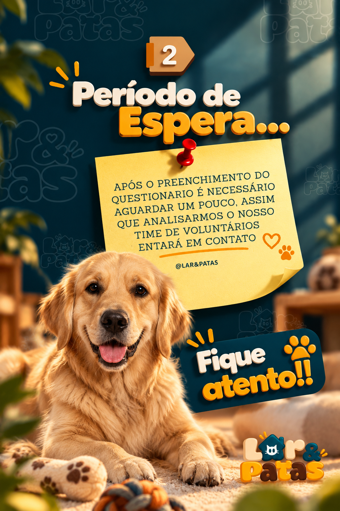
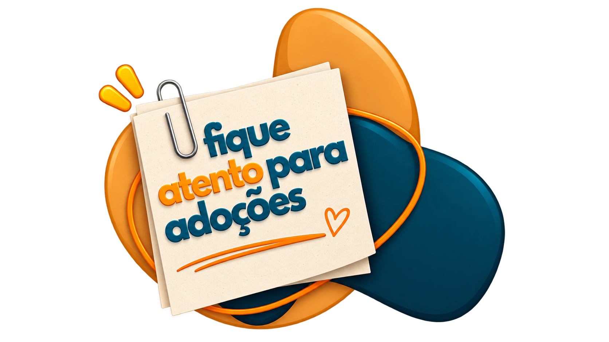
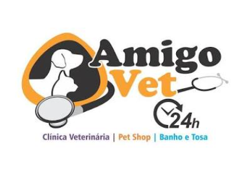

Bem-vindo ao Lar&Patas
O Lar&Patas é uma plataforma que conecta pessoas a ONGs parceiras para encontrar lares amorosos para animais abandonados. Encontre seu novo amigo de quatro patas!
Como Funciona a Adoção





Quem somos
O Lar&Patas é uma organização dedicada a encontrar lares amorosos para animais abandonados. Nosso objetivo é conectar pessoas com animais que precisam de um lar.
- 0+ Animais Adotados
- 0+ Instituições Parceiras
- 0+ Voluntários
- 0+ Cidades atendidas
Escolha seu amigo na vitrine Pet
Veja os cães e gatos disponíveis, filtre por porte e idade e favorite os que mais combinam com você.
Ver pets para adoção
Histórias de Adoção
Quem já abriu a porta de casa para um novo amigo conta como foi.
.png)
.png)
.png)
.png)
.png)
.png)

Novos pets chegam toda semana
Siga o @lar&patas nas redes sociais para ver quem acabou de entrar na vitrine.
Nossos Parceiros
Reunimos ONGs parceiras para aproximar quem quer adotar de quem precisa de um lar.

Amigo Vet Anjos de focinho
Anjos de focinho Guabi Natural
Guabi Natural Novo Lar Pet
Novo Lar Pet Petz
Petz VetVida
VetVida